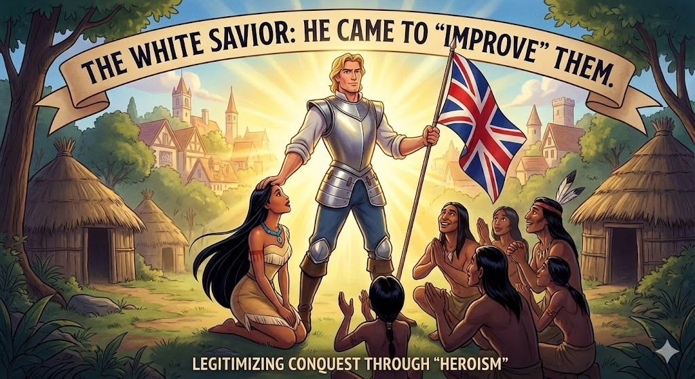
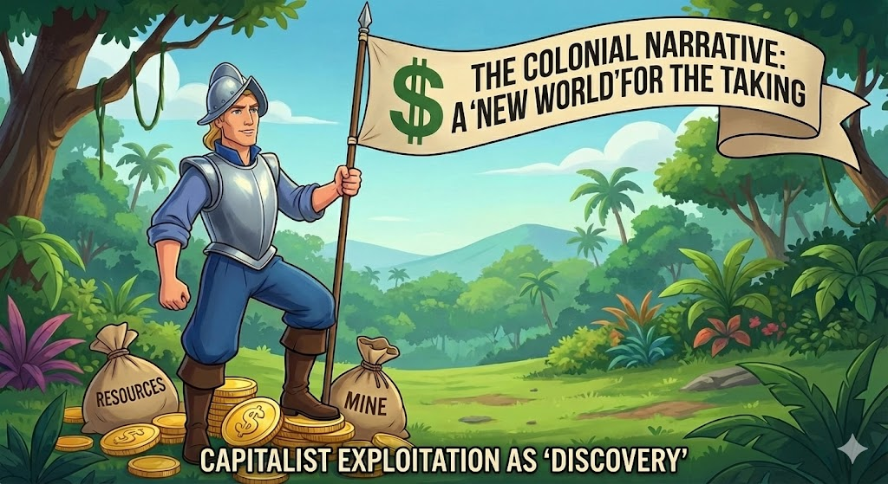
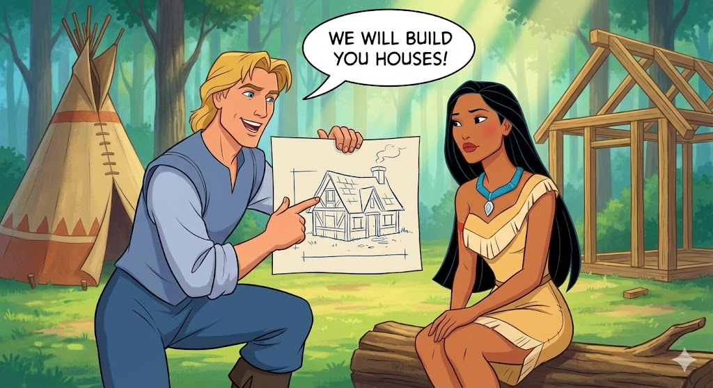

shield סטריאוטיפ "המושיע הלבן"
ג'ון סמית הוא התגלמות הסטריאוטיפ של "המושיע הלבן" (White Savior).
הסרט מציג אותו כגבר המערבי האמיץ, הרציונלי והחזק, שמגיע להציל את הילידים (ובעיקר את האישה הילידית) מעולמם ה"פרימיטיבי".
הקהל מזדהה איתו, ובכך הסרט נותן לגיטימציה לנוכחות הבריטית: "הם צריכים אותנו כדי להשתפר".

explore נרטיב הגילוי והכיבוש
עבור ג'ון סמית, אמריקה היא "עולם חדש" שרק מחכה להתגלות. זהו ביטוי לנרטיב קולוניאליסטי: האדמה נחשבת "ריקה" וחסרת בעלות עד שהאדם הלבן מגיע ותוקע בה דגל.
השיר "שלי, שלי, שלי" (Mine, Mine, Mine) חושף את האידיאולוגיה הקפיטליסטית המניעה את הכיבוש: האדמה היא משאב לניצול, לא מקום קדוש.

school אימפריאליזם תרבותי: "נבנה לכם בתים"
בתחילת הסרט, ג'ון סמית מבטא אימפריאליזם תרבותי מובהק: הוא שופט את תרבות הילידים בכלים של התרבות שלו.
הוא קורא להם "פראים" לא מתוך רוע, אלא מתוך אמונה עמוקה שהתרבות הבריטית (ערים, כבישים, בתים) היא התרבות ה"נכונה" והיחידה. המשפט שלו "נבנה לכם בתים הגונים" חושף את ההתנשאות התרבותית וההגמוניה המערבית.